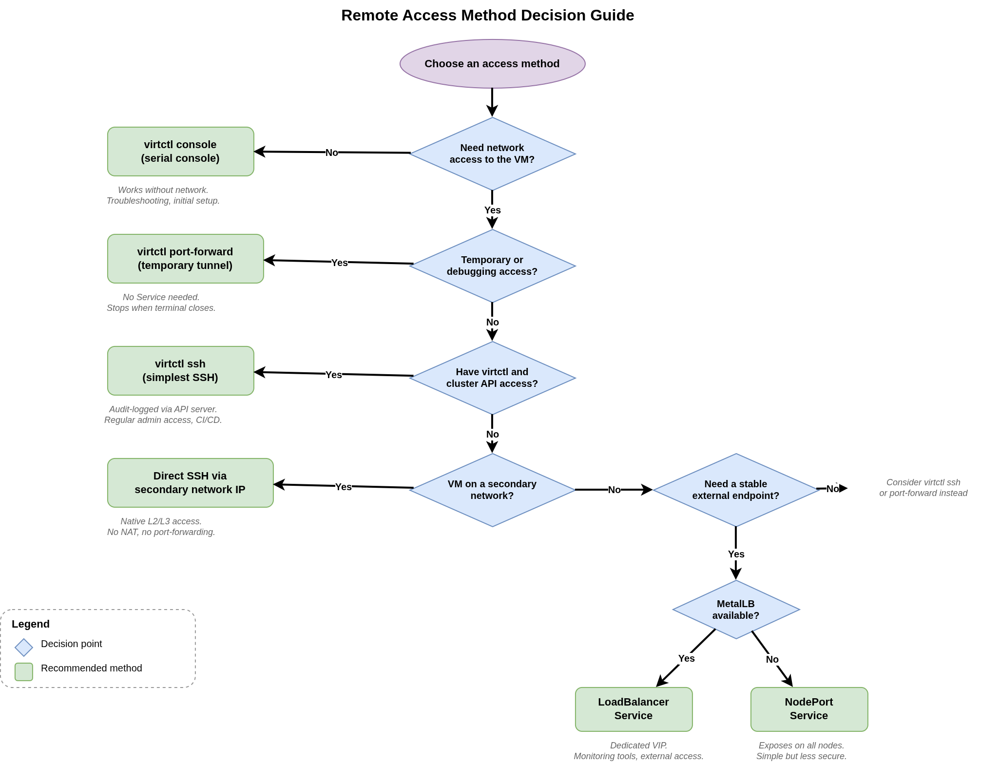

Linux 仮想マシンへのリモートアクセス
概要
本チュートリアルでは、OpenShift Virtualization で実行されている Linux 仮想マシンにアクセスするためのさまざまな手法を解説します。各手法は、迅速なトラブルシューティングから本番環境グレードのアクセスパターンまで、それぞれのユースケースに適しています。
アクセス手法とユースケース
| 手法 | ユースケース | SSH 鍵の必要性 |
|---|---|---|
コンソール |
初期設定、トラブルシューティング |
不要 |
VNC |
GUI アクセス |
不要 |
virtctl SSH |
迅速な管理者アクセス |
必要 |
NodePort Service |
外部アクセス |
必要 |
ポート転送 |
開発、テスト |
必要 |
セカンダリーネットワーク |
従来のインフラストラクチャ |
必要 |
前提条件
-
OpenShift Virtualization Operator がインストールされた OpenShift 4.18 以降
-
CLI ツール:
oc、virtctl、kubectl -
実行中の Linux VM が少なくとも 1 台あること (本チュートリアルで作成します)
-
SSH およびネットワークに関する基本的な知識
セットアップ: テスト用 VM のデプロイ
namespace を作成し、Fedora VM をデプロイします。
oc create namespace vm-access-demoSSH を有効にして VM を作成します。
| この例の cloud-init パスワードはデモ目的でのみ使用しています。本番環境では、常に強力で一意のパスワードを使用するか、SSH 公開鍵認証を使用してください。 |
apiVersion: kubevirt.io/v1
kind: VirtualMachine
metadata:
name: fedora-access-vm
namespace: vm-access-demo
spec:
dataVolumeTemplates:
- apiVersion: cdi.kubevirt.io/v1beta1
kind: DataVolume
metadata:
name: fedora-access-vm-disk
spec:
sourceRef:
kind: DataSource
name: fedora
namespace: openshift-virtualization-os-images
storage:
resources:
requests:
storage: 30Gi
runStrategy: RerunOnFailure
template:
metadata:
labels:
kubevirt.io/domain: fedora-access-vm
spec:
domain:
cpu:
cores: 2
devices:
disks:
- disk:
bus: virtio
name: rootdisk
- disk:
bus: virtio
name: cloudinitdisk
interfaces:
- masquerade: {}
name: default
rng: {}
machine:
type: pc-q35-rhel9.4.0
memory:
guest: 4Gi
networks:
- name: default
pod: {}
volumes:
- dataVolume:
name: fedora-access-vm-disk
name: rootdisk
- cloudInitNoCloud:
userData: |-
#cloud-config
user: fedora
password: fedora123
chpasswd: { expire: false }
ssh_pwauth: true
ssh_authorized_keys:
- ssh-rsa AAAAB3NzaC1yc2EAAAADAQABAAABAQC... your-public-key-here
name: cloudinitdiskNote: your-public-key-here は実際の SSH 公開鍵に置き換えるか、テスト用にパスワード認証を使用してください。
VM をデプロイします。
oc apply -f fedora-access-vm.yamlVM が準備完了になるまで待機します。
oc get vmi -n vm-access-demo手法 3: virtctl による SSH アクセス
手法 4: NodePort Service による直接 SSH 接続
NodePort Service を使用して SSH ポートを外部に公開します。
NodePort Service の作成
apiVersion: v1
kind: Service
metadata:
name: fedora-ssh-nodeport
namespace: vm-access-demo
spec:
type: NodePort
selector:
kubevirt.io/domain: fedora-access-vm
ports:
- protocol: TCP
port: 22
targetPort: 22
nodePort: 30022Service を適用します。
oc apply -f fedora-ssh-nodeport.yaml手法 5: ポート転送による SSH アクセス
手法 6: セカンダリーネットワーク経由の直接ネットワークアクセス
bridge ネットワークや localnet ネットワーク上の VM に対して、IP 経由で直接アクセスします。
前提条件
-
VM がセカンダリーネットワーク (bridge、localnet、VLAN) に接続されていること
-
現在の場所からネットワークに到達可能であること
-
固定 IP が構成されているか、予約済みアドレスを持つ DHCP が利用可能であること
セカンダリーネットワークを持つ VM
apiVersion: kubevirt.io/v1
kind: VirtualMachine
metadata:
name: fedora-vlan-vm
namespace: vm-access-demo
spec:
dataVolumeTemplates:
- apiVersion: cdi.kubevirt.io/v1beta1
kind: DataVolume
metadata:
name: fedora-vlan-vm-disk
spec:
sourceRef:
kind: DataSource
name: fedora
namespace: openshift-virtualization-os-images
storage:
resources:
requests:
storage: 30Gi
runStrategy: RerunOnFailure
template:
metadata:
labels:
kubevirt.io/domain: fedora-vlan-vm
spec:
domain:
cpu:
cores: 2
devices:
disks:
- disk:
bus: virtio
name: rootdisk
- disk:
bus: virtio
name: cloudinitdisk
interfaces:
- masquerade: {}
name: default
- bridge: {}
name: vlan-network
rng: {}
machine:
type: pc-q35-rhel9.4.0
memory:
guest: 4Gi
networks:
- name: default
pod: {}
- name: vlan-network
multus:
networkName: localnet-vlan-100
volumes:
- dataVolume:
name: fedora-vlan-vm-disk
name: rootdisk
- cloudInitNoCloud:
userData: |-
#cloud-config
user: fedora
password: fedora123
chpasswd: { expire: false }
ssh_pwauth: true
ssh_authorized_keys:
- ssh-rsa AAAAB3NzaC1yc2EAAAADAQABAAABAQC... your-public-key-here
networkData: |-
version: 2
ethernets:
enp1s0:
dhcp4: true
enp2s0:
dhcp4: false
dhcp6: false
addresses:
- 192.168.100.100/24
name: cloudinitdiskSSH 鍵の構成
cloud-init への鍵の追加
VM の userData セクションに含めます。
ssh_authorized_keys:
- ssh-rsa AAAAB3NzaC... your-key-hereパスワード認証の無効化
本番環境では、パスワード認証と root ログインを無効にします。cloud-init 構成の userData セクションに以下の設定を追加します。
volumes:
- cloudInitNoCloud:
userData: |-
#cloud-config
user: fedora
ssh_pwauth: false
disable_root: true
ssh_authorized_keys:
- ssh-rsa AAAAB3NzaC... your-key-here
name: cloudinitdiskこの構成の効果:
-
ssh_pwauth: false- SSH のパスワード認証を無効化 -
disable_root: true- SSH 経由の root ログインを防止 -
SSH 鍵認証のみを必須とする
検証コマンド
VM ステータスの確認
# VirtualMachine の確認
oc get vm -n vm-access-demo
# VirtualMachineInstance の確認
oc get vmi -n vm-access-demo
# VMの詳細情報
oc describe vmi fedora-access-vm -n vm-access-demoよくある問題と解決策
すべてのアクセス手法のトラブルシューティングについては、Linux VM へのリモートアクセスに関するトラブルシューティング を参照してください。
問題: virtctl コンソールにログインプロンプトが表示されない
原因: VM が完全に起動していないか、表示の問題。
解決策: 少し待機し、VM ステータスを確認して VM が実行中であることを検証します。
問題: SSH 接続が拒否される
原因: SSH サービスが実行されていないか、ファイアウォールでブロックされている。
解決策:
-
sshd ステータスの確認:
sudo systemctl status sshd -
必要に応じて起動:
sudo systemctl start sshd -
ファイアウォールの確認:
sudo firewall-cmd --list-services
問題: virtctl ssh 接続が失敗する
原因: SSH サービスが実行されていないか、認証失敗。
解決策:
-
VM 内で SSH サービスが実行されていることを確認
-
SSH 鍵が適切に構成されていることを確認
-
VM にネットワーク接続があることを確認
-
ポート転送を使用してクラスター内から SSH をテスト
適切なアクセス方法の選択
以下の図は、要件に基づいて適切なアクセス方法を選択するためのガイドです。

各判断ポイントでは、ネットワークアクセスの必要性、アクセスが一時的なものかどうか、利用可能なインフラストラクチャーに基づいて選択肢を絞り込みます。以下の表は、一般的なロールとシナリオを推奨される方法に対応付けています。
| シナリオ | 推奨される方法 | 理由 |
|---|---|---|
起動しない VM をデバッグする開発者 |
コンソール ( |
ネットワーク接続なしで動作します。SSH が破損している場合や、VM にネットワークがない場合の唯一の選択肢です。 |
VM 上でアプリケーションをテストする開発者 |
ポートフォワード ( |
Service を作成しない一時的なアクセスです。ターミナルセッションが終了すると停止します。 |
運用担当者/SRE による通常の管理者アクセス |
virtctl SSH ( |
クラスター認証情報を持つユーザーにとって最もシンプルな認証アクセスです。API サーバー経由で監査ログが記録されます。 |
VM にデプロイする CI/CD パイプライン |
サービスアカウントを使用した virtctl SSH |
クラスター認証情報を使用した自動 SSH アクセス。外部エンドポイントは不要です。 |
外部モニタリングツール (Nagios、Zabbix、Prometheus) |
NodePort または LoadBalancer Service |
VM の再起動後も維持される安定した外部エンドポイント。利用可能な場合は MetalLB を備えた LoadBalancer を使用します。 |
既存の企業ネットワークと統合された VM |
セカンダリーネットワーク (直接 SSH) |
NAT やポートフォワードを行わずに企業ネットワークから直接 L2/L3 アクセスが可能です。標準の SSH ツールが使用できます。 |
ニーズを満たす最もシンプルな方法から始めてください。ほとんどのユーザーは、トラブルシューティングには virtctl console、通常のアクセスには virtctl ssh のみが必要です。NodePort/LoadBalancer は、外部システムがクラスター認証情報なしで VM に到達する必要がある場合にのみ使用してください。
|
クリーンアップ
本チュートリアルで作成したすべてのリソースを削除します。
# VMの削除
oc delete vm fedora-access-vm fedora-vlan-vm -n vm-access-demo
# サービスの削除
oc delete svc fedora-ssh-nodeport -n vm-access-demo
# namespaceの削除
oc delete namespace vm-access-demoまとめ
本チュートリアルでは、以下の内容を学習しました。
-
OpenShift Virtualization で Linux VM にアクセスするための複数の手法
-
各アクセス手法の使い分け
-
cloud-init を介した SSH 鍵の構成方法
-
サービスを使用して VM を外部に公開する方法
-
一時的なアクセスのためにポート転送を使用する方法
-
セカンダリーネットワーク上の VM にアクセスする方法
-
VM アクセスのセキュリティベストプラクティス
-
よくある問題とトラブルシューティング手順